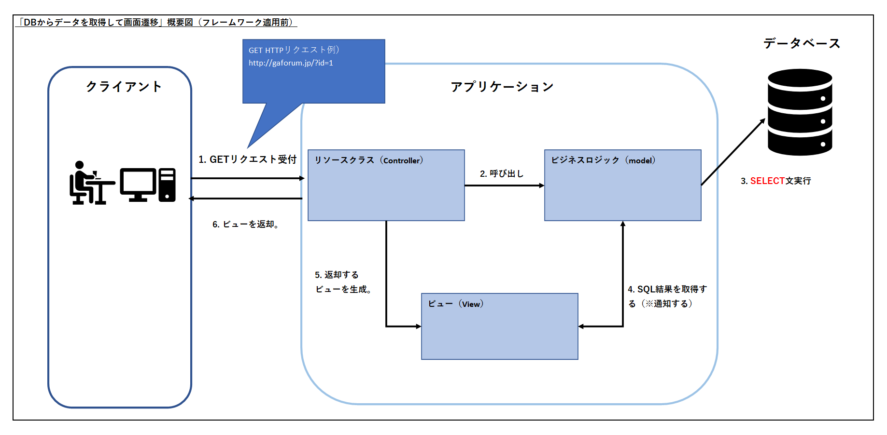
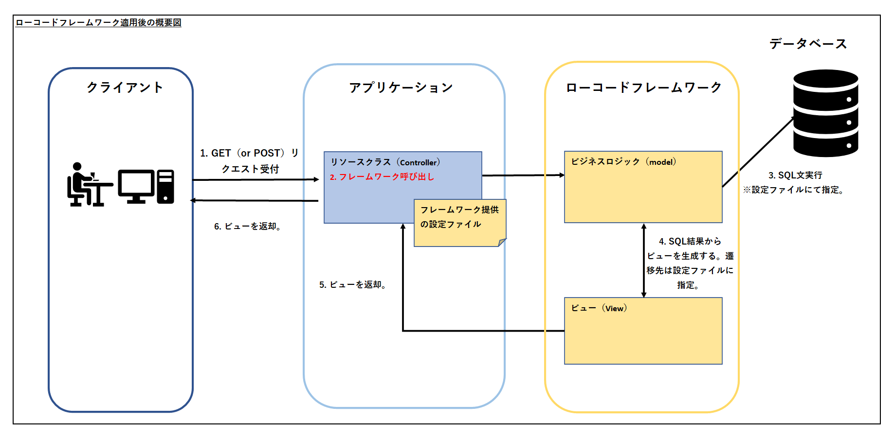

鈴木貴司のポートフォリオサイトです。
今回、ポートフォリオとして「ローコードフレームワーク」という、Javaの画面遷移フレームワークの作成を行いました。（※「要件定義」～「結合テスト」まで一貫して開発）
その工程ドキュメント含めて、ポートフォリオとしてご覧ください。
[ローコードフレームワーク開発]
GitHubリポジトリへ gitリポジトリ: https://github.com/suzuki617/lowcode-fw-repo.git
Javaを用いたサーバーサイドの画面遷移において、JavaEEのJAX-RSや、SpringBootが提供している各種フレームワーク等を使用するのが主流です。
開発現場においては、上記の技術を用いて画面遷移のアプリケーションの作りこみを行うのが普通ですが、頻繁に利用する画面遷移パターンとして、
「DBからデータを取得して画面遷移」（HTTP GETメソッド）と「DBにデータ保存をして画面遷移」（HTTP POSTメソッド）の2パターンに分別されると考えました。
MVCモデルを利用した「DBからデータを取得して画面遷移」（HTTP GETメソッド）の概要図です。
MVCモデルを利用した「DBにデータ保存をして画面遷移」（HTTP POSTメソッド）の概要図です。
上記概要図の中で、ビジネスロジック（model）とビュー（View）の処理をフレームワークとして提供する事が出来れば、
アプリケーション自体のコード記述量を減らせる事が出来ると思い、フレームワークとして提供しようと考えました。
ローコードフレームワーク適用した際の概要図は、以下の形となります。「ローコードフレームワーク」部分が今回の開発対象となります。
フレームワークの利用方法は、GitHubリポジトリの「07_マニュアル」にある「ローコード画面遷移フレームワーク_導入マニュアル_v1.xlsx」を参照して下さい。
開発にかかった工数となります。
| 成果物 | 工数（人時） |
|---|---|
| 01_要件定義 | 5h |
| 02_基本設計 | 8h |
| 03_詳細設計 | 3h |
| 04_製造（フレームワーク） | 8h |
| 04_製造（テスト画面） | 4h |
| 05_単体テスト | 4h |
| 06_結合テスト | 3h |
| 07_マニュアル | 2h |
| 合計 | 37 (人時) |
作成した成果物に関しては、ページ上部の「GitHubリポジトリのclone」or「ZIPでダウンロード」ボタンにて、ご確認下さい。
以上、お手数おかけしますが、ご確認の程よろしくお願いします。
連絡先：鈴木貴司（Takashi Suzuki）/ email：oira617@gmail.com